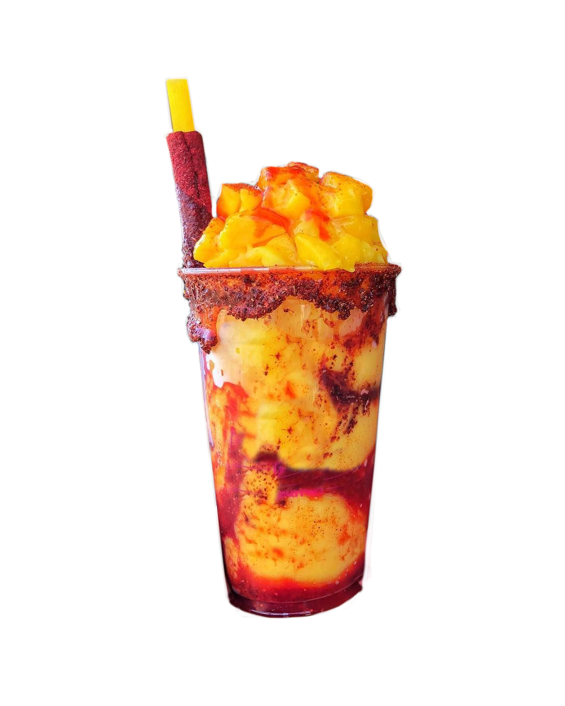

Mangonada Recipe
A Mexican dessert made of mango sorbet and chamoy topped with chili powder.
Ingredients
- 16 oz frozen mangos
- 1 cup mango nectar or juice
- 2 tablespoons fresh lime juice About 1 large lime
- 1 cup ice
- chili lime seasoning
- chamoy
- 1 fresh mango cut into small chunks for topping
- Tamarindo candy straws (aka Tarugos)
Preparation
- Add the frozen mango, mango nectar, lime juice and ice in a blender.
- Cover and puree on medium speed. Blend until smooth. About 1 minute.
- On two small plates, add some chili lime powder to one and chamoy in the other. Grab your cup, dip the edge on the chamoy, then transfer to the chili lime powder plate.
- Swirl some chamoy on the sides of the cup.
- Pour some Mangonada mixture in the cup, top with fresh mango chunks and sprinkle with chili lime powder. Add more chamoy on top, optional.
- Garnish each glass with a tamarind candy stick and a thick straw or a spoon. Enjoy immediately!